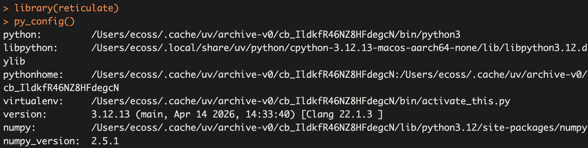

Código
file.edit("~/.Renviron")Fecha: 03 de noviembre, 2026
En el capítulo anterior ejecutamos Python desde R con reticulate. Ahora configuraremos nuestra computadora para escribir documentos de Quarto (.qmd) con bloques de código de Python desde RStudio, e instalaremos todas las bibliotecas que usaremos en el resto del curso.
Al terminar este capítulo podrás:
Esta es la ruta completa. Cada paso se explica a detalle más abajo; marca cada uno cuando lo termines:
| ✔ | Paso | ¿Dónde? | ¿Cuántas veces? |
|---|---|---|---|
| ☐ | Requisitos previos: verificar Python y RStudio | Terminal | Una vez |
| ☐ | Paso 1: crear el entorno virtual | Terminal | Una vez |
| ☐ | Paso 2: activar el entorno | Terminal | Cada vez que instales paquetes |
| ☐ | Paso 3: instalar todos los paquetes del curso | Terminal | Una vez |
| ☐ | Paso 4: configurar QUARTO_PYTHON y RETICULATE_PYTHON |
Archivo .Renviron |
Una vez |
| ☐ | Paso 5: reiniciar R | RStudio | Después de cada cambio en .Renviron |
| ☐ | Paso 6: verificar que todo funciona | Terminal y Console | Una vez (y cuando algo falle) |
| ☐ | Paso 7: crear y renderizar tu primer documento | RStudio | En cada documento |
Quarto no ejecuta el código por sí mismo: utiliza un motor de ejecución (engine). Para Python existen dos opciones, y cada una busca Python de forma diferente:
| Motor | ¿Quién ejecuta Python? | ¿Cuándo lo usa Quarto? | ¿Qué Python usa? |
|---|---|---|---|
jupyter |
Un kernel de Jupyter. | Cuando el documento solo tiene bloques {python}, o cuando el YAML incluye jupyter: python3. |
El que indique la variable QUARTO_PYTHON. |
knitr |
R, mediante el paquete reticulate. |
Cuando el documento tiene al menos un bloque {r}, o cuando el YAML incluye engine: knitr. |
El que indique la variable RETICULATE_PYTHON (o, si no existe, el configurado en RStudio). |
Por eso configuraremos las dos variables para que apunten al mismo entorno virtual: así, sin importar qué motor use tu documento, siempre tendrás disponibles tus bibliotecas. Los bloques de Python que ejecutas a mano en RStudio (Cmd/Ctrl + Enter) también usan reticulate.
En este capítulo escribiremos comandos en dos lugares distintos de RStudio. Es el error más común, así que antes de empezar identifica cada pestaña:
| Pestaña de RStudio | ¿Qué se escribe ahí? | Indicador | Ejemplo |
|---|---|---|---|
| Console | Código de R. | > |
library(reticulate) |
| Terminal | Comandos de Bash (python3, pip, source). |
$ o % |
python3 --version |
Si no ves la pestaña Terminal, ábrela con Tools > Terminal > New Terminal (o Alt + Shift + R). En Windows, verifica que la Terminal use Git Bash: Tools > Global Options > Terminal > New terminals open with: Git Bash.
En la Terminal:
python3 --versionpython --versionDebe aparecer algo como Python 3.12.13. Cualquier versión 3.10 o más reciente funciona. Si aparece command not found (o no se reconoce como un comando), instala Python siguiendo el capítulo Instalación de Python y reticulate en Rstudio.
RStudio ya incluye Quarto, así que no necesitas instalarlo por separado. Usa una versión reciente de RStudio (Help > Check for Updates).
Un entorno virtual es una carpeta con su propia copia de Python y sus propios paquetes. Usarlo evita mezclar los paquetes del curso con el Python del sistema (y evita el error externally-managed-environment).
En la Terminal de RStudio:
python3 -m venv ~/.venvs/quarto-pythonpython -m venv ~/.venvs/quarto-pythonEsto crea el entorno en la carpeta .venvs/quarto-python dentro de tu carpeta personal (~). Solo se hace una vez. El comando no muestra ningún mensaje si todo sale bien. Compruébalo listando la carpeta:
ls ~/.venvs/quarto-pythonDebes ver las carpetas bin (en Windows, Scripts), include y lib, y el archivo pyvenv.cfg.
La carpeta .venvs empieza con un punto, por lo que está oculta: no la verás en el Finder o el Explorador de archivos a menos que actives la opción de mostrar archivos ocultos. Es normal.
source ~/.venvs/quarto-python/bin/activatesource ~/.venvs/quarto-python/Scripts/activateCuando el entorno está activo, la terminal muestra su nombre entre paréntesis al inicio de la línea:
(quarto-python) $Comprueba que python ahora es el del entorno:
which python
# /Users/tu_usuario/.venvs/quarto-python/bin/pythonwhich python
# /c/Users/tu_usuario/.venvs/quarto-python/Scripts/pythonDentro del entorno usamos python (sin el 3), porque apunta al Python del entorno. Para salir del entorno escribe deactivate.
La activación solo dura mientras esa Terminal esté abierta. Si cierras la Terminal o abres una nueva, tendrás que activar el entorno otra vez antes de instalar paquetes. Para renderizar documentos no necesitas activarlo: de eso se encargan las variables del paso 4.
Con el entorno activo (verifica que aparezca (quarto-python)), actualiza pip e instala todos los paquetes con un solo comando:
python -m pip install --upgrade pip
python -m pip install PyYAML jupyter ipykernel numpy pandas matplotlib seaborn scipy sympy plotlyLa instalación tarda algunos minutos y muestra muchos mensajes. Al final debe aparecer una línea que empieza con Successfully installed ....
| Paquete | ¿Para qué sirve? | ¿Dónde lo usaremos? |
|---|---|---|
PyYAML |
Leer el encabezado YAML de los documentos de Quarto. | Quarto (obligatorio). |
jupyter |
Ejecutar código de Python dentro de los documentos de Quarto. | Quarto y Jupyter Notebook (obligatorio). |
ipykernel |
Proporcionar el kernel que ejecuta Python en Jupyter. | Quarto y Jupyter Notebook (obligatorio). |
numpy |
Arreglos y cálculo numérico. | Introducción a NumPy. |
pandas |
Tablas de datos (DataFrame). |
Visualización de datos. |
matplotlib |
Gráficas estáticas. | Visualización de datos. |
seaborn |
Gráficas estadísticas, construidas sobre Matplotlib. | Visualización de datos. |
scipy |
Herramientas científicas: estadística, optimización, álgebra lineal. | Cómputo científico. |
sympy |
Cálculo simbólico (derivadas, integrales, ecuaciones). | Cálculo simbólico con SymPy. |
plotly |
Gráficas interactivas. | Visualización de datos. |
Todavía en la Terminal, con el entorno activo:
python -c "import yaml, jupyter, ipykernel, numpy, pandas, matplotlib, seaborn, scipy, sympy, plotly; print('Todo correcto')"Si aparece Todo correcto, la instalación terminó bien. Si aparece ModuleNotFoundError: No module named '...', vuelve a ejecutar el comando de instalación: probablemente se interrumpió.
Para ver todos los paquetes instalados y sus versiones:
python -m pip listLos paquetes quedan guardados en el entorno: no necesitas reinstalarlos cada vez que abras RStudio.
Si más adelante necesitas otra biblioteca, el procedimiento es siempre el mismo: abre la Terminal, activa el entorno (paso 2) y ejecuta python -m pip install nombre_del_paquete.
Configuraremos las dos variables de la tabla del inicio en el archivo .Renviron, que R lee automáticamente cada vez que inicia. Así la configuración es permanente.
En la Terminal, con el entorno activo:
python -c "import sys; print(sys.executable)"| Sistema | Ejemplo de resultado |
|---|---|
| macOS | /Users/ana/.venvs/quarto-python/bin/python |
| Linux | /home/ana/.venvs/quarto-python/bin/python |
| Windows | C:\Users\ana\.venvs\quarto-python\Scripts\python.exe |
Copia tu resultado; lo usarás en el siguiente paso.
\ por diagonales normales /: C:/Users/ana/.venvs/quarto-python/Scripts/python.exe.path.expand("~/...") en la Console de R para obtener la ruta: en Windows, el ~ de R apunta a la carpeta Documentos, no a tu carpeta personal, y la ruta quedaría mal..RenvironEn la Console de R:
file.edit("~/.Renviron")Se abrirá el archivo en el editor de RStudio (si no existía, se crea vacío). Agrega estas dos líneas, reemplazando la ruta por la tuya:
QUARTO_PYTHON=/Users/tu_usuario/.venvs/quarto-python/bin/python
RETICULATE_PYTHON=/Users/tu_usuario/.venvs/quarto-python/bin/pythonReglas del archivo .Renviron:
NOMBRE=valor.=.~.Guarda el archivo (Cmd/Ctrl + S).
| Variable | ¿Quién la usa? |
|---|---|
QUARTO_PYTHON |
Quarto, cuando el documento usa el motor Jupyter (jupyter: python3). |
RETICULATE_PYTHON |
reticulate, cuando el documento usa el motor knitr (tiene bloques {r}), y al ejecutar bloques de Python a mano en RStudio. |
Puedes definir las variables temporalmente en la Console, en lugar de usar .Renviron. Se pierden al reiniciar R y deben ejecutarse antes de cualquier código de Python:
Sys.setenv(QUARTO_PYTHON = "/Users/tu_usuario/.venvs/quarto-python/bin/python")
Sys.setenv(RETICULATE_PYTHON = "/Users/tu_usuario/.venvs/quarto-python/bin/python")Ve a Session > Restart R (o cierra RStudio por completo y vuelve a abrirlo).
Este paso es obligatorio. R solo lee el archivo .Renviron al iniciar, y reticulate elige qué Python usar una sola vez por sesión. Si no reinicias R, tus cambios no tendrán efecto.
En la Console:
Sys.getenv("QUARTO_PYTHON")
Sys.getenv("RETICULATE_PYTHON")Ambas deben mostrar la ruta de tu entorno. Si aparece "" (vacío), R no leyó el archivo: revisa que lo hayas guardado, que no haya espacios alrededor del = y que hayas reiniciado R.
jupyter)En la Terminal:
quarto check jupyterDebe mostrar la ruta del Python de tu entorno (Path) y la versión de Jupyter:
[✓] Checking Python 3 installation....OK
Version: 3.12.13
Path: /Users/tu_usuario/.venvs/quarto-python/bin/python
Jupyter: 5.9.1
Kernels: python3
[✓] Checking Jupyter engine render....OKSi en Path aparece otra ruta (por ejemplo /usr/bin/python3), Quarto no está usando tu entorno: revisa QUARTO_PYTHON (6.1). Si la Terminal responde quarto: command not found, consulta ese error en la solución de problemas: no impide usar el botón Render.
reticulate usa tu entorno (motor knitr)En la Console, antes que cualquier otra cosa:
library(reticulate)
py_config()La primera línea, python:, debe mostrar tu entorno, y la última nota debe decir que se usó RETICULATE_PYTHON:
python: /Users/tu_usuario/.venvs/quarto-python/bin/python
libpython: /Users/tu_usuario/.local/share/uv/python/cpython-3.12.13-macos-aarch64-none/lib/libpython3.12.dylib
pythonhome: /Users/tu_usuario/.venvs/quarto-python:/Users/tu_usuario/.venvs/quarto-python
version: 3.12.13 (main, Apr 14 2026, 14:33:40) [Clang 22.1.3 ]
numpy: /Users/tu_usuario/.venvs/quarto-python/lib/python3.12/site-packages/numpy
numpy_version: 2.5.4
NOTE: Python version was forced by RETICULATE_PYTHONLas rutas de libpython pueden ser distintas en tu computadora; lo importante es la línea python:. Comprueba también que reticulate encuentra las bibliotecas:
py_module_available("numpy") # TRUE
py_module_available("matplotlib") # TRUE
py_module_available("plotly") # TRUE
py_module_available("sympy") # TRUESi todo dice TRUE, la configuración está completa. 🎉
Si la línea python: muestra… |
Significa | ¿Qué hacer? |
|---|---|---|
.../.venvs/quarto-python/bin/python |
✅ Usa tu entorno. | Nada. |
.../.cache/uv/archive-v0/.../bin/python |
❌ Usa un Python temporal que creó reticulate, sin tus bibliotecas. |
Revisa RETICULATE_PYTHON (pasos 4 y 5). |
.../.local/share/uv/python/.../bin/python3.12 y numpy: [NOT FOUND] |
❌ Usa el Python base del entorno, sin tus bibliotecas. | Revisa RETICULATE_PYTHON (pasos 4 y 5) y este error. |
/usr/bin/python3 u otra ruta |
❌ Usa el Python del sistema. | Revisa RETICULATE_PYTHON (pasos 4 y 5). |
py_config() no solo muestra la configuración: también inicia Python. Si la ruta es incorrecta, corrige .Renviron y reinicia R antes de volver a ejecutarla.
Crea un documento nuevo: File > New File > Quarto Document… y, al inicio del archivo .qmd, coloca:
---
title: "Introducción a Python"
author: "Tu nombre"
format: html
jupyter: python3
---| Elemento | Descripción |
|---|---|
title |
Título del documento. |
author |
Autor o responsable del documento. |
format: html |
Genera un documento HTML. |
jupyter: python3 |
Indica que Python se ejecutará con el motor Jupyter, usando el kernel python3 (el Python de QUARTO_PYTHON). |
Después del YAML escribe texto en Markdown e inserta bloques de código. Para insertar un bloque de Python usa Insert > Code Cell > Python o escríbelo:
## Mi primer programa en Python
```{python}
nombre = "Ana"
edad = 20
print("Hola", nombre)
print("Edad:", edad)
```Guarda el archivo y presiona el botón Render (o Cmd/Ctrl + Shift + K). Quarto ejecutará el código y mostrará el documento HTML con los resultados.
Si tu documento combina bloques de R y de Python, usa el motor knitr:
---
title: "R y Python juntos"
format: html
engine: knitr
---
```{r}
x <- c(1, 2, 3)
```
```{python}
import numpy as np
print(np.array(r.x) * 2) # Usar en Python una variable creada en R
```En este caso Python lo ejecuta reticulate, con el Python de RETICULATE_PYTHON.
Para comprobar todo de una vez, copia este bloque en tu documento y presiona Render:
```{python}
import numpy as np
import pandas as pd
import matplotlib.pyplot as plt
import sympy as sp
import plotly
print("NumPy:", np.__version__)
print("pandas:", pd.__version__)
print("SymPy:", sp.__version__)
print("Plotly:", plotly.__version__)
x = np.linspace(0, 2 * np.pi, 100)
plt.plot(x, np.sin(x))
plt.title("¡Todo funciona!")
plt.show()
```Si ves las versiones y la gráfica, estás listo para el resto del curso.
Para ejecutar un bloque sin renderizar todo el documento, coloca el cursor dentro del bloque y presiona Cmd/Ctrl + Enter (línea por línea) o el botón ▶ (bloque completo). El resultado aparece debajo del bloque o en la Console, que cambia de > a >>> (Python).
Las opciones de cada bloque se escriben al inicio, cada una en una línea que comienza con #|:
```{python}
#| label: fig-grafica
#| fig-cap: "Mi primera gráfica en Python"
#| echo: false
import matplotlib.pyplot as plt
plt.plot([1, 2, 3, 4], [1, 4, 9, 16])
plt.show()
```| Opción | ¿Qué hace? |
|---|---|
echo: false |
Muestra el resultado pero oculta el código. |
eval: false |
Muestra el código pero no lo ejecuta. |
output: false |
Ejecuta el código pero oculta el resultado. |
warning: false |
Oculta las advertencias. |
label: fig-nombre |
Nombre del bloque, permite hacer referencias cruzadas a la figura. |
fig-cap: "..." |
Pie de la figura. |
Si también quieres usar este entorno en Jupyter Notebook (consulta el apéndice Entornos para trabajar con Python), regístralo como un kernel con nombre propio. En la Terminal, con el entorno activo:
python -m ipykernel install --user --name quarto-python --display-name "Python (quarto-python)"Después, al crear un notebook en Jupyter, elige el kernel Python (quarto-python).
Busca en esta sección el mensaje que te apareció. Al final hay una tabla de resumen.
python3: command not found / python no se reconoce como un comando¿Dónde aparece? En la Terminal, en los requisitos previos o en el paso 1.
Causa: Python no está instalado o la Terminal no lo encuentra.
Solución:
python (sin el 3) o py.The virtual environment was not created successfully because ensurepip is not available¿Dónde aparece? En el paso 1, en Linux (Ubuntu/Debian).
Solución: instala el módulo venv y vuelve a crear el entorno:
sudo apt install python3-venv
python3 -m venv ~/.venvs/quarto-pythonsource: no such file or directory¿Dónde aparece? En el paso 2, al activar el entorno.
Causa: la ruta es incorrecta o el entorno no se creó.
Solución:
Scripts, no bin: source ~/.venvs/quarto-python/Scripts/activate.ls ~/.venvs/quarto-python. Si no existe, repite el paso 1.error: externally-managed-environment¿Dónde aparece? En el paso 3, al instalar paquetes.
Causa: intentaste instalar en el Python del sistema porque el entorno no está activo.
Solución: activa el entorno (paso 2), verifica que aparezca (quarto-python) al inicio de la línea y vuelve a instalar. No uses la opción --break-system-packages.
Defaulting to user installation because normal site-packages is not writeable¿Dónde aparece? En el paso 3.
Causa: igual que el error anterior: el entorno no está activo y los paquetes se están instalando en otro lugar.
Solución: cancela con Ctrl + C, activa el entorno (paso 2) y vuelve a instalar.
SyntaxError: invalid syntax al escribir pip install¿Dónde aparece? Al escribir el comando de instalación.
Causa: escribiste el comando en la Console de R o dentro de Python (>>>), en lugar de la Terminal.
Solución: si la Console muestra >>>, escribe exit para regresar a R. Después escribe el comando en la pestaña Terminal.
ReadTimeoutError / Connection error durante la instalación¿Dónde aparece? En el paso 3.
Causa: la conexión a internet se interrumpió o es lenta.
Solución: vuelve a ejecutar el mismo comando de instalación; pip continuará con los paquetes que faltan. Si la red de la escuela es lenta, instala los paquetes de uno en uno.
quarto: command not found¿Dónde aparece? En el paso 6.2, en la Terminal.
Causa: RStudio trae su propia copia de Quarto, pero no siempre está disponible en la Terminal.
Solución: no te preocupes: el botón Render de RStudio sí funciona. Para tener el comando quarto en la Terminal, instala Quarto desde quarto.org y vuelve a abrir la Terminal. Mientras tanto, puedes verificar el motor Jupyter renderizando el documento de prueba del paso 7.3.
No module named 'yaml' / Jupyter is not available¿Dónde aparece? Al presionar Render en un documento con jupyter: python3.
Starting python3 kernel...
Traceback (most recent call last):
File ".../quarto/share/jupyter/jupyter.py", line 20, in <module>
from notebook import notebook_execute, RestartKernel
File ".../quarto/share/jupyter/notebook.py", line 15, in <module>
from yaml import safe_load as parse_string
ModuleNotFoundError: No module named 'yaml'
Jupyter is not available in this Python installation.
Install with python3 -m pip install jupyterCausa: Quarto encontró un Python que no tiene instalados PyYAML ni jupyter. Generalmente es el Python del sistema, porque QUARTO_PYTHON no está configurada.
Solución:
QUARTO_PYTHON con Sys.getenv("QUARTO_PYTHON") (paso 6.1)..Renviron (paso 4) y reinicia R (paso 5).ModuleNotFoundError al ejecutar o renderizar desde RStudio¿Dónde aparece? Al ejecutar un bloque de Python con Cmd/Ctrl + Enter o al presionar Render en un documento con bloques {r}:
ModuleNotFoundError: No module named 'sympy'
ModuleNotFoundError: No module named 'matplotlib'
ModuleNotFoundError: No module named 'plotly'Causa: Python no encuentra la biblioteca en el Python que está usando reticulate, aunque esté instalada en tu entorno quarto-python. Ocurre cuando RETICULATE_PYTHON no está configurada y RStudio usa otro Python.
Solución:
Diagnostica en la Console:
library(reticulate)
py_config()
py_module_available("matplotlib")Por ejemplo, esta salida indica que se está usando un Python temporal de la carpeta .cache/uv:

py_config() cuando se usa un Python de la caché de uv: la línea python: no apunta a ~/.venvs/quarto-python.Configura RETICULATE_PYTHON en .Renviron (paso 4).
Reinicia R (paso 5) y verifica de nuevo con py_config() (paso 6.3).
En ese menú también se puede elegir un Python, pero con los entornos venv suele fallar: el archivo ~/.venvs/quarto-python/bin/python es un enlace simbólico (un “atajo”) al Python base con el que se creó el entorno. Si RStudio sigue el atajo, guarda el Python base, que no tiene tus bibliotecas. En ese caso py_config() muestra:
python: /Users/tu_usuario/.local/share/uv/python/cpython-3.12.13-macos-aarch64-none/bin/python3.12
...
numpy: [NOT FOUND]
NOTE: Python version was forced by use_python() functionRETICULATE_PYTHON tiene prioridad sobre ese menú. Cuando está configurada, reticulate lo indica con el mensaje “The request to use_python(...) will be ignored because the environment variable RETICULATE_PYTHON is set”, y usa tu entorno.
Solución rápida para la sesión actual (por ejemplo, en clase): reinicia R (Session > Restart R) y ejecuta en la Console, antes de cualquier código de Python:
library(reticulate)
use_virtualenv("~/.venvs/quarto-python", required = TRUE)
py_config() # La línea python: debe mostrar ~/.venvs/quarto-pythonEsta configuración se pierde al reiniciar R.
use_virtualenv() pero py_config() sigue mostrando el Python anterior¿Dónde aparece? En la Console. use_virtualenv() no muestra ningún error, pero no tiene efecto: py_config() sigue mostrando la ruta anterior.
Causa: Python ya se había iniciado en esta sesión (por ejemplo, porque ejecutaste antes py_config() o un bloque de Python), y reticulate no puede cambiar de Python sin reiniciar R.
Solución: reinicia R (Session > Restart R) y ejecuta use_virtualenv() antes que cualquier otra cosa.
ModuleNotFoundError: No module named 'pandas' (o cualquier otra biblioteca)¿Dónde aparece? Al renderizar o ejecutar, aunque la configuración esté bien (py_config() muestra tu entorno).
Causa: esa biblioteca no está instalada en tu entorno.
Solución: en la Terminal, activa el entorno (paso 2) e instálala: python -m pip install pandas.
Cuando RETICULATE_PYTHON indica un Python fijo, la función py_require() ya no puede instalar bibliotecas por ti. Instálalas siempre en tu entorno con python -m pip install ....
.Renviron pero no pasa nada / “Funcionaba ayer y hoy no”Causas y soluciones:
Sys.setenv() en lugar de .Renviron: esa configuración se pierde al reiniciar. Guarda las variables en .Renviron (paso 4).=: debe ser QUARTO_PYTHON=/ruta, no QUARTO_PYTHON = /ruta.~ en la ruta: escribe la ruta completa.\: cámbialas por /.~/.venvs/quarto-python: créala de nuevo (pasos 1 a 3).Verifica siempre con Sys.getenv("QUARTO_PYTHON") y Sys.getenv("RETICULATE_PYTHON") (paso 6.1).
| Mensaje o síntoma | ¿Dónde? | Causa | Solución |
|---|---|---|---|
python3: command not found |
Terminal | Python no instalado o no encontrado. | En Windows usa python; si no, instala Python. |
ensurepip is not available |
Terminal (Linux) | Falta el módulo venv. |
sudo apt install python3-venv. |
source: no such file or directory |
Terminal | Ruta incorrecta. | En Windows usa Scripts/ en lugar de bin/. |
externally-managed-environment |
Terminal | El entorno no está activo. | Activa el entorno (paso 2). |
Defaulting to user installation |
Terminal | El entorno no está activo. | Activa el entorno (paso 2). |
SyntaxError al escribir pip install |
Console | El comando se escribió en R o en Python. | Escríbelo en la Terminal. |
ReadTimeoutError |
Terminal | Conexión lenta. | Repite la instalación. |
quarto: command not found |
Terminal | Quarto no está en la Terminal. | Usa el botón Render o instala Quarto. |
No module named 'yaml' / Jupyter is not available |
Render | Falta QUARTO_PYTHON o los paquetes. |
Pasos 3, 4 y 5. |
ModuleNotFoundError y py_config() no muestra tu entorno |
RStudio | Falta RETICULATE_PYTHON. |
Pasos 4 y 5. |
ModuleNotFoundError y py_config() sí muestra tu entorno |
RStudio | La biblioteca no está instalada. | python -m pip install ... con el entorno activo. |
use_virtualenv() no cambia el Python |
Console | Python ya se inició en la sesión. | Reinicia R y ejecútalo primero. |
Sys.getenv() regresa "" |
Console | R no leyó .Renviron. |
Revisa el formato del archivo y reinicia R. |
| Paso | ¿Dónde? | Comando o acción | ¿Cuántas veces? |
|---|---|---|---|
| 1. Crear el entorno | Terminal | python3 -m venv ~/.venvs/quarto-python |
Una vez |
| 2. Activar el entorno | Terminal | source ~/.venvs/quarto-python/bin/activate |
Cada vez que instales paquetes |
| 3. Instalar los paquetes | Terminal | python -m pip install PyYAML jupyter ipykernel numpy pandas matplotlib seaborn scipy sympy plotly |
Una vez |
| 4. Configurar las variables | Archivo .Renviron |
QUARTO_PYTHON=/ruta/completa y RETICULATE_PYTHON=/ruta/completa |
Una vez |
| 5. Reiniciar R | RStudio | Session > Restart R | Después de cada cambio en .Renviron |
| 6. Verificar | Terminal y Console | quarto check jupyter, py_config(), py_module_available() |
Una vez (y cuando algo falle) |
| 7. Crear y renderizar | RStudio | YAML con jupyter: python3 (o engine: knitr) y botón Render |
En cada documento |